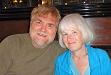

SUNDSTROM.US
This is the homepage of
Bill Sundstrom and Betty Cassady.
The last change to this site was made 11 April 2012
when the look and feel of the site was changed.
You may view a large number of photos from Bill's younger days, from
five weeks to twenty years years old.
Bill has stored a large numbers photos at Flickr.com.
Click here to view
Bill's photostream.
Status Notes
If you click on the links to the left you will find letters home during my 2002 and 2003 trips throughtout the Americas and around the world.
A record of our last journey is can be found in
Bill's BLOG.
Those include stories from 2004 in Eastern Europe and from 2005 in Argentina.
In 2006 and 2007, we spent six months in Asia, traveling overland from Beijing to Singapore.
From September of 2007 through April 2008, we have been traveling in Canada and the USA.
In the first half 2009 we traveled in Chile and Agrentina.
In the fall of 2009 we traveled out west visiting friends and family.
The first four months of 2010 we lived in Merida on the Yucatan penisula in Mexico.
We spent three months in western Europe in the fall of 2010.
In 2011 we lived four months in Texas and travel three more in Canada and New England.
We began 2012 living in Vista, San Diego County, California.
Travel Photos
Family Pages
Look at the links on the left for the site content.
The links will bring you to the following items:
- Bill's Travel Journals
- Bill's Comments on Life and Travel.
- Bill and Betty's family tree
- Pictures of our daughter Birgitta
-
Bill's BLOG.
It has stories and pictures about
our latest travels and adventures. - Dain and Marleta have moved from Santa Monica to Palo Alto in 2010.
- Birgitta delivered a beautiful daughter, Johanna, in November 2007, and another, Lucianna, the last day of 2008.
|
|